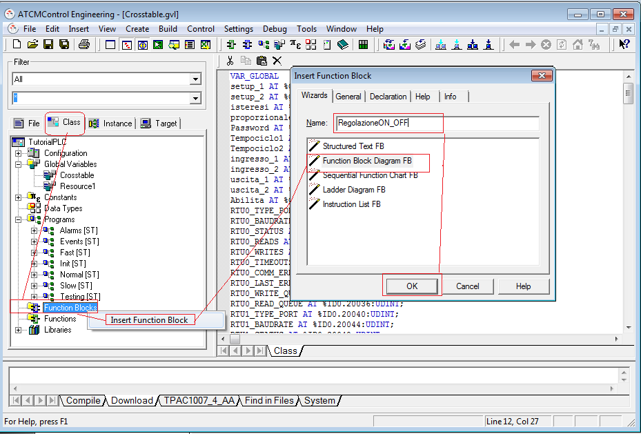
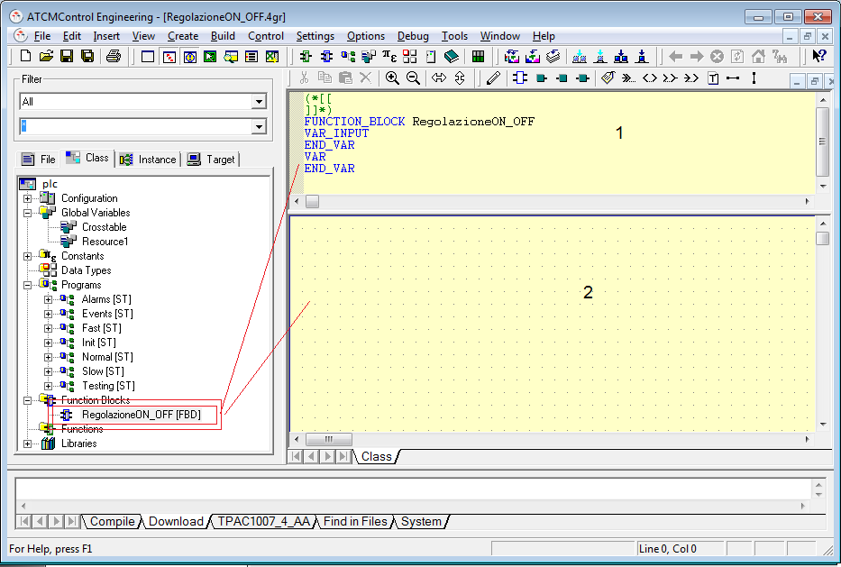
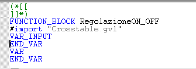
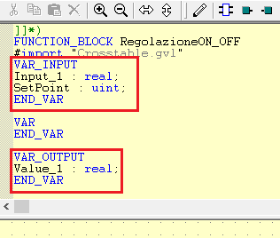
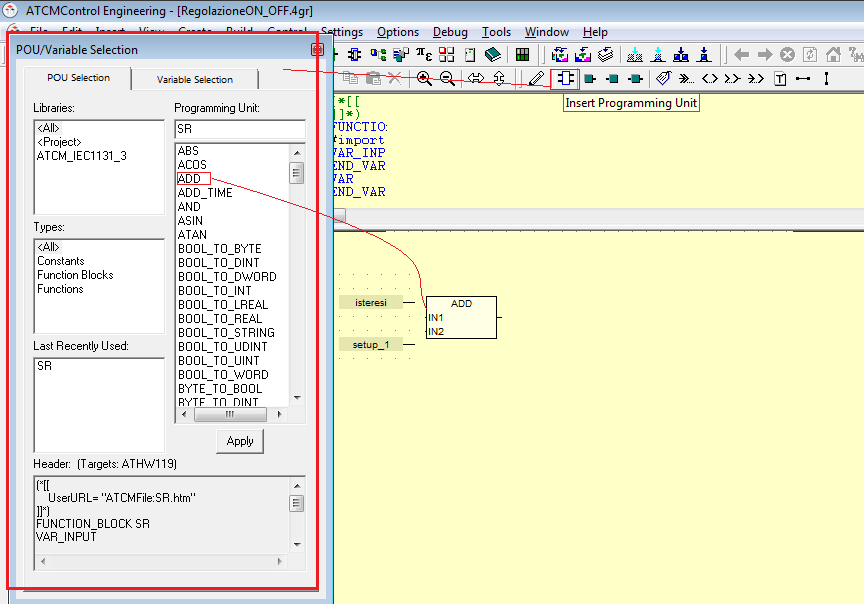

Proceed in the following way to create a function block for the language Function Block Diagram (FBD):
Select “Class” tab
Select in the tree Function Blocks and press right mouse key
Select and press Insert Function Block
In the window select Function Block Diagram FB
Insert the desired name for the function block (for example: RegolazioneON_OFF)
Press OK

The function block is now created, if you expand the project tree Function Blocks you see the tree.
To enter in the function block you must select it and double click on the name of the function block. The window that appears has two zone:
Zone 1 for variables definition
Zone 2 for code

First of all the function block must see the Crosstable variables. To do this place the mouse in the zone1 (that changes background color) immediately after the name of the function block, and insert the sentence: #import “Crosstable.gvl” as shown in the figure.

Input/output variables (if any add the instance “VAR_OUTPUT” and “END_VAR”) must be declared. For example, see the following figure:

In this example, when the function block is dragged into the program, 2 inputs and 1 output are generated.
Now insert program code in the zone 2.
To insert operators select Insert Programming Unit icon where the windows with the library operators will appears. Select and drag the desired operator (for example ADD operator to sum 2 variables) in the zone 2.
To connect the variables to the operator, connect them as in a electric schematic capture. To insert variables see paragraph “Insert variables in FBD – LD – SFC programs”.
